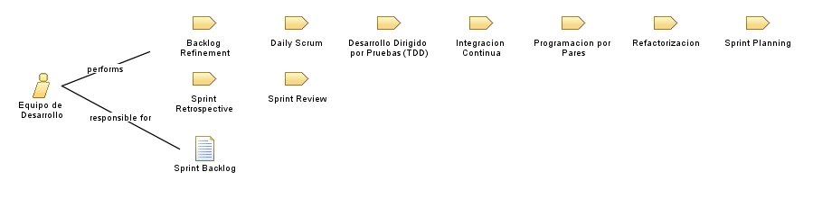

| Role: Equipo de Desarrollo |
 |
|
Relationships
 |
||
| Primary Performs | ||
|---|---|---|
| Additionally Performs | ||
| Modifies |
|
|
| Process Usage | ||
Main Description
|
Equipo de 5-9 personas con todas las habilidades necesarias para entregar incrementos potencialmente desplegables. Practican XP y son corresponsables del SAD. |